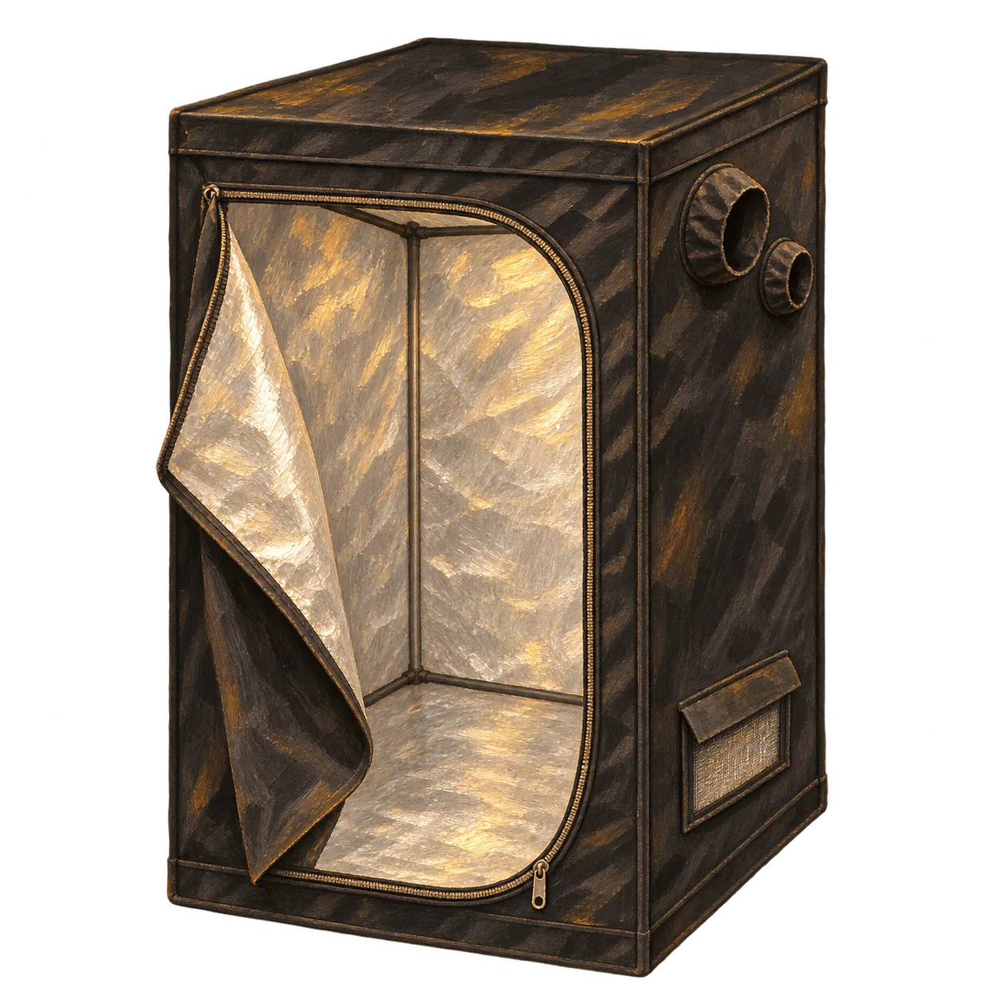
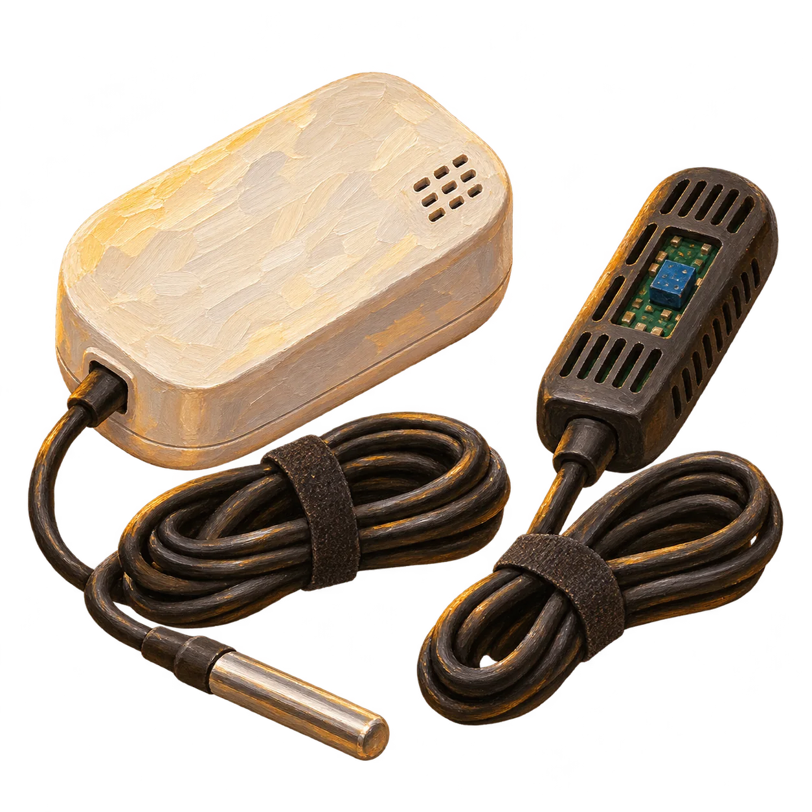
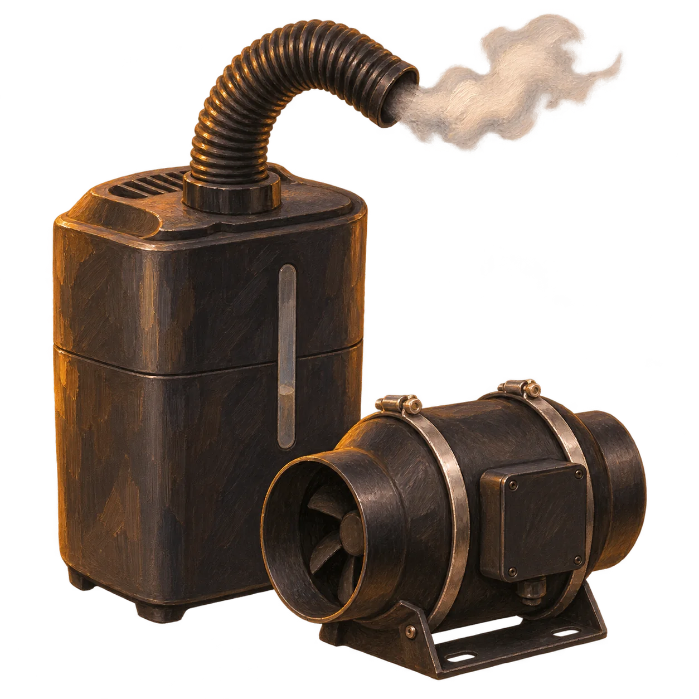
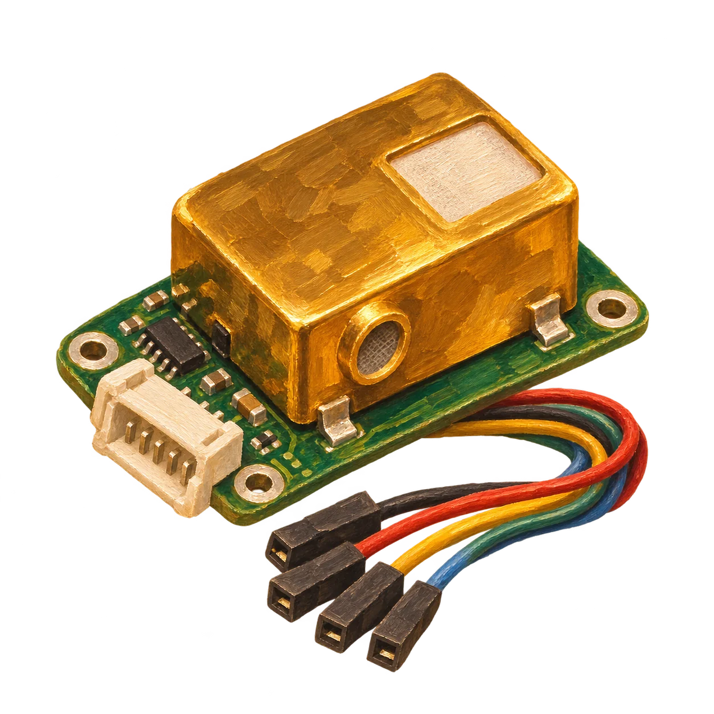
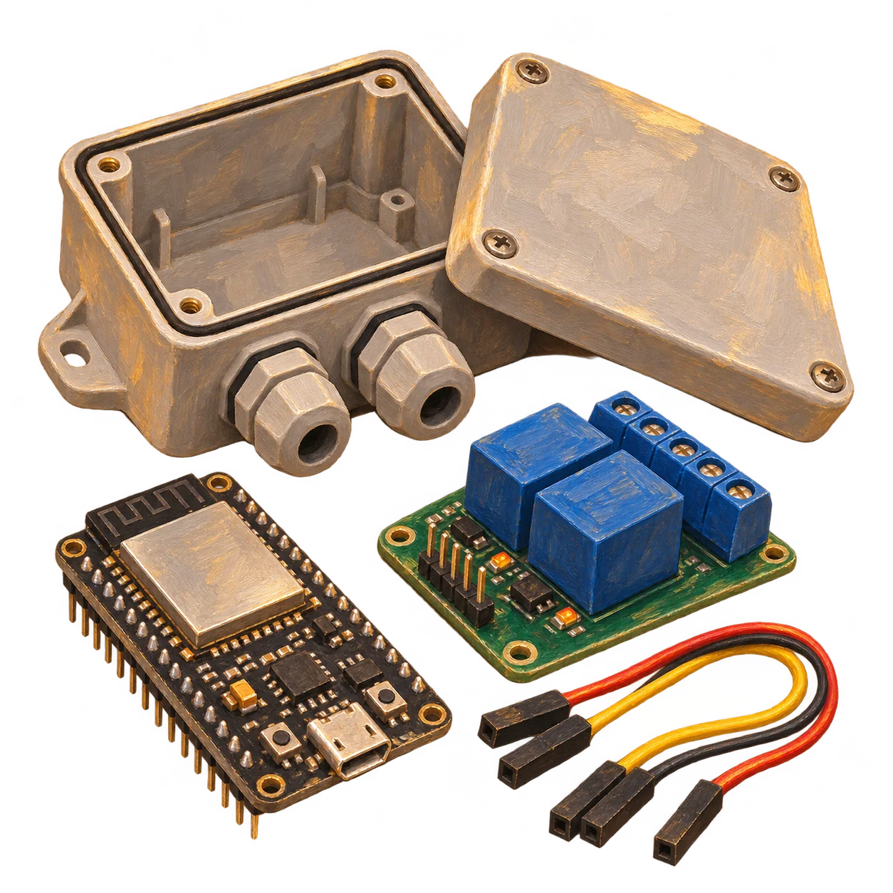
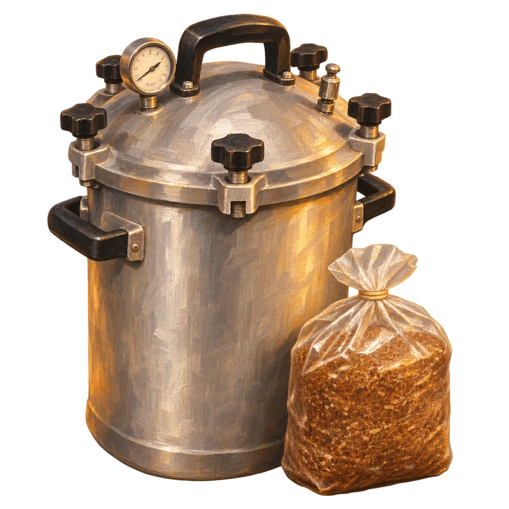
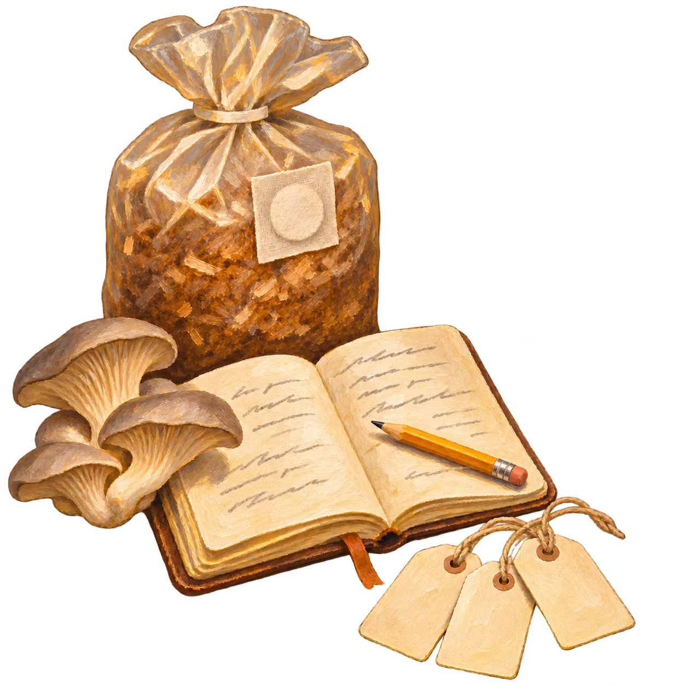

Seleccionar la cepa
Dentro de una misma especie hay diferencias. En shiitake, las cepas pueden variar en tamaño y aspecto del sombrero. Compararlas permite buscar un perfil de producto antes de pensar en el corte.[3]

Cuidar la calidad desde el cultivo.
Estamos en preproducción: validamos el proceso antes de la primera cosecha.[7]
El sistema de cultivo
En Tenjo, combinamos observación, medición y control por módulos para acompañar el cultivo desde la preparación del sustrato hasta la cosecha. Los sensores, la humidificación y la renovación de aire nos ayudan a conocer y ajustar el ambiente de cada cámara.
El registro por lote está diseñado para conectar esas condiciones con el origen del inóculo, el sustrato y lo observado durante el proceso. Buscamos que cada prueba deje información útil para comparar, aprender y ajustar.
Estamos en preproducción: la validación de los ciclos, la integración del CO₂ y la supervisión central forman parte de la puesta a punto.







Del cultivo a la cocina
El diámetro de un sombrero o el grosor de un pie abren posibilidades distintas. Algunas de esas características se pueden explorar desde el cultivo.
Dentro de una misma especie hay diferencias. En shiitake, las cepas pueden variar en tamaño y aspecto del sombrero. Compararlas permite buscar un perfil de producto antes de pensar en el corte.[3]

En eryngii, la ventilación y el CO₂ influyen en el desarrollo del pie y del sombrero. Es una vía de ensayo para estudiar formatos de pieza; la respuesta depende de la cepa y del sistema de cultivo.[4]

El raleo consiste en retirar parte de las setas jóvenes y dejar otras en desarrollo. Se utiliza en cultivo de eryngii y permite estudiar el calibre de las piezas que llegan a cocina.[5]

En shiitake, la apertura del sombrero indica madurez; el tamaño por sí solo no la define. Registrar ese punto ayuda a comparar piezas con un estado de desarrollo semejante.[6]
Son posibilidades documentadas de cultivo. En Setas de la Peña, su adaptación a un plato requiere ensayos de cultivo y cocina antes de ofrecer un producto a medida.
Cortes y técnicas en cocina ↗